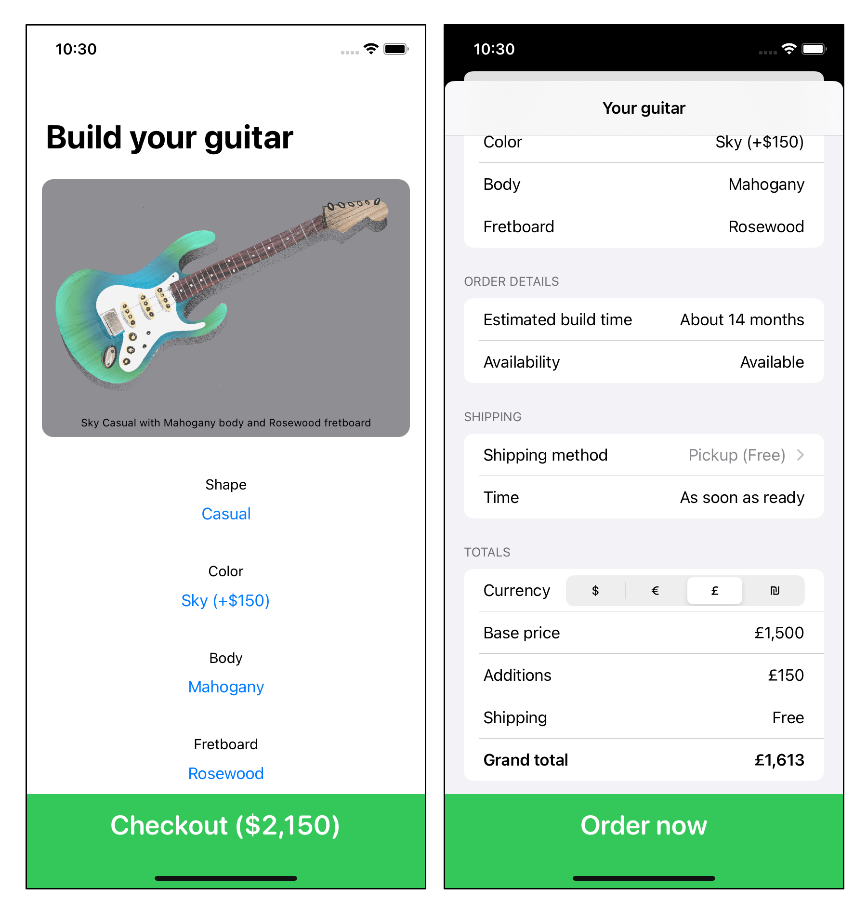

第11章：功能反应式编程¶
作为一个开发者，你可能每天都会碰到一些流行语。其中最流行和经常出现的可能是"反应式编程"、"函数式编程"甚至是"功能反应式编程"。
像其他许多流行语一样，这些术语描述了大量的编程概念和实践，常常使开发者感到困惑和畏惧。
本章将重点介绍函数式反应式编程中最重要、最精炼的概念，以及如何将这些概念应用于你的应用程序。
功能性？反应性的？¶
虽然这些术语经常被放在一起使用，但它们并不相互包容。这意味着每个术语都是独立存在的。
反应式编程¶
反应式编程的理念是，你不需要手动和强制性地读取某个实体的状态或值，而是倾听或订阅该实体的变化，并在你的状态发生变化时得到通知--在这种情况下，你可以反应该变化并相应地更新你的应用程序。这些变化是随着时间的推移而排放的:
在上面的例子中，有一个名为totalPrice的价格值的流。每当它发出一个新的总价格，你就相应地更新你的应用程序的用户界面。
这个最小的概念在确保数据完整性方面很强大，但它还有很多其他的好处，比如组合和简单的转换，你将在本章中了解到这些。
考虑一下这个例子（没有必要运行这个）：
// 1
var userBalance = 5
let productPrice = 10
// 2
let canMakePurchase = userBalance >= productPrice
print(canMakePurchase)
// 3
userBalance += 20
print(canMakePurchase) // 3
在这个例子中，你：
- 设置一个用户的余额为
5美元，产品价格为10美元。 - 定义一个
canMakePurchase布尔值，以确保用户有足够的余额来购买该产品。它的值是false，因为用户只有5美元。 - 给用户的余额增加
20美元，这意味着他们应该能够购买10美元的产品。但是打印canMakePurchase仍然打印出false。而且，你的应用程序中任何依赖于canMakePurchase的其他视图仍然使用错误的false值。
这就是反应式编程所要解决的问题的本质。canMakePurchase并不反映你的应用程序的最新状态，因为它不知道用户的余额发生了变化。它代表了以前的静态计算，这几乎没有什么用处，而且需要你手动确保canMakePurchase在它的任何一个依赖项（在这个例子中是productPrice和userBalance）改变时被更新。
在一个反应式的世界里，这个例子的伪代码是这样的：
let userBalance = ?? // Stream of user's balance
let productPrice = ?? // Stream of product's price
let canMakePurchase = userBalance
.combineLatest(productPrice)
.map { $0 >= $1 } // Stream of Bool
在这个伪代码例子中，canMakePurchase在userBalance或productPrice发生变化时总是有正确的布尔值。同时，任何依赖于canMakePurchase的视图都会根据新的值自动更新：

这就是基本构成在反应式编程中的样子，这也是发展你的反应式思维的关键："所有的东西都是一个价值流"。
因为在你的应用程序中发生的任何事情基本上都是随着时间的推移而发生的，它可以很容易地被表示为一个值流。当你把你的思维转移到把所有的数据片断看作是数据的流时，构图的选择就变得无穷无尽。
iOS开发者已经通过第三方框架使用这些概念，如RxSwift和ReactiveSwift。但随着Combine--苹果公司的反应式编程框架的引入，变得更加广泛，内置于SDK中。
函数式编程¶
不出所料，函数式编程围绕着函数，但更具体的是纯函数。
纯函数是指以下的函数：
- 对于相同的输入，总是产生相同的输出：考虑
min(3, 7)--无论你运行多少次，你都会得到3。 - 执行没有副作用：对副作用的广泛解释超出了本书的范围。但从本质上讲，一个纯函数不应该影响其范围之外的任何东西。这方面的一些例子是：从你的函数中打印，执行网络请求，或修改外部状态。这些都不应该出现在纯函数中。
为什么不是两者都有？¶
那么，你可能会问，为什么这些术语经常放在一起呢？这只是因为函数式编程的概念在大多数反应式编程的使用案例中是固有的。
最经常出现的例子是操作符--转化这些你可以订阅的反应式片段的简单函数。这些操作符大多是纯函数，其中许多是高阶函数（可以接受其他函数的函数，如map、filter和reduce），你在上一章中了解过这些。
这些操作符中的许多在Swift标准库中都有相同的名字，并且也执行同样的工作。这方面的一个例子是map，它对一个流中的每个元素进行转换。

如果此刻感觉有点混乱，请不要担心。在这一章中，你会经常与操作者打交道。
反应式基础知识¶
有很多人试图为流的行为方式定义一个统一的标准。最常见的是Reactive Streams（https://www.reactive-streams.org/）和Reactive Extensions（Rx）（http://reactivex.io/）。从本质上讲，所有这些不同的标准和它们的实现都有相同的基础概念。
命名¶
向订阅者发送更新的基本流，即生产者，在不同的实现中有着不同的命名。例如，在RxSwift中它们被称为Observables，而在Combine中它们被称为Publishers。
尽管一些小的实现细节有所不同，但所有这些实现大多代表了向订阅者推送更新的相同概念。
事件¶
这些生产者不仅发射数值，而且发射一种叫做事件的东西。
有三种事件，它们在每个实现中的命名可能有点不同。
- 一个值事件，它带有一个特定类型的值。你可能会得到这些值的无尽流，直到流的完成。
这方面的好例子是鼠标移动或击键。这些事件无休止地发生，而且永远不会完成，不像网络请求，它将发出一个单一的值并完成。
- 一个失败或完成的事件。这两个事件都是终止性的，保证不会有更多的值被传递。失败事件表明流以不可恢复的故障结束，而完成事件表明流的有效和预期完成。
水的思维¶
数据流类似于水的流。想想一个复杂的管道系统，你可以随心所欲地打开每个水龙头，让所有不同的水源（水流）流向一个水槽（消费者）。你也可以关闭一个特定的水龙头（取消对该水流的订阅）。
这些不同的水源就是水流，而这些水源在管道中的多个连接点代表了水流允许的各种组成选项。
这种对sink的比喻非常普遍，以至于Combine有一个sink(receiveCompletion:receiveValue:)方法，它可以让你使用单独的闭包来订阅一个流上的变化，以处理值和完成事件。
流只是增强的序列¶
当你看到流和Swift语言时，你能在哪里找到它们之间的相似之处呢？答案很简单：序列，或者更广泛地说，迭代器。
迭代器可以让你迭代一个值的列表，理论上，这个列表可以是无限的，也可以是有限的：
let events: [Event]
var eventsIterator = events.makeIterator()
while let event = events.next() {
print(event)
}
上面的代码从一个Event数组中创建了一个迭代器，并调用next()来检索下一个事件，只要有一个可用。这和反应式流是一样的。
两者之间的主要区别是，流是推数据给消费者，而迭代器是在消费者要求时拉数据。这仍然是理解流的一个简单而有用的方法，以及它们在最基本的形式上是多么简单。
The Luthier app¶
It’s time to get practical and write some code. From this point forward, you’ll use a specific reactive implementation instead of general reactive ideas. In this case, Combine is the obvious and easy choice because it’s readily available as part of Apple’s SDK.
You’ll build a SwiftUI and Combine-based app that lets you choose guitar parts for a custom guitar and then order it.
Luthier应用¶
现在是实际操作和写一些代码的时候了。从现在开始，你将使用一个特定的反应式实现，而不是一般的反应式想法。在这种情况下，Combine是明显而简单的选择，因为它是苹果SDK的一部分，可以随时使用。
你将建立一个基于SwiftUI和Combine的应用程序，让你为一把定制吉他选择吉他部件，然后订购。

对于那些即将摇滚的人，我们向你们致敬!
探索该项目¶
打开启动项目。下面是它的结构和包括的内容的概述：
Build：在这个视图中，你将选择吉他的各个部分，并看到吉他的预览，价格和结帐按钮。Checkout：在这里，你将看到你所订购的所有部件的概况，选择一个运输选项并最终完成你的购买。Services：这个文件夹包括各种API服务，以获取吉他信息，以及你在结账视图中使用的货币转换。Models：这些是驱动该应用程序的不同模型。一把Guitar可能有一个特定的形状、琴身木材、指板和颜色。这些附加的东西都被表示为一个有各种选择的enum。Helpers：顾名思义，这个文件夹包括你在本章中会用到的各种帮助工具。
现在不要担心所有这些零碎的东西，因为你在本章中迟早会用到它们。
构建一个吉他¶
构建并运行启动项目，你会注意到一个基本模型吉他的预览，以及一个假的Checkout按钮。没有太多花哨的东西：

在本节中，你将添加各种SwiftUI Picker，并通过反应流的各种力量来处理用户的选择：组合、反应性、绑定等。
对于这个应用程序，你将使用MVVM（Model-View-View Model）架构，其中每个视图都有一个提供实际业务逻辑的视图模型，而视图层只执行绘图。还有许多其他的选择，但SwiftUI使这种选择变得相当自然。不过，你在本章中获得的知识并不与特定的架构相挂钩。
你的第一个视图模型¶
视图模型是你每个视图的中心枢纽。它获取用户的所有操作和选择作为输入，并为视图提供最新状态作为输出。首先，你要确保你有所有的输入。
你将使用SwiftUI的Picker来向用户展示他们可以对吉他进行的修改。为了跟踪用户的每个选择，你需要在你的视图模型中建立一些绑定。
Note
本章中的一些术语是针对SwiftUI的。因为本章的重点是功能反应式编程，除了利用反应式流，你不会深入到SwiftUI的部分。
在你的Build文件夹中创建一个新的BuildViewModel.swift文件，并在其中添加以下代码：
import Combine
class BuildViewModel: ObservableObject {
// Bindings / State
@Published var selectedShapeIdx = 0
@Published var selectedColorIdx = 0
@Published var selectedBodyIdx = 0
@Published var selectedFretboardIdx = 0
}
在上面的代码中，你已经定义了一个符合ObservableObject的新视图模型。这意味着，使用一些SwiftUI Black Magic™，每当任何@Published属性发生变化时，你的BuildView将自动得到通知。
你还添加了四个@Published属性，作为各种吉他部件拾取器的绑定。你一会儿就会用到这些。
添加吉他附加拾取器¶
在BuildView.swift中，你会发现一个方便的辅助方法，叫做additionPicker(for:selection:)，它接收一个添加类型和一个绑定来跟踪用户的选择。
因为所有的吉他添加物都符合Addition协议，你可以利用这样一个通用方法来轻松地创建所有的挑选器，并将它们链接到你的新视图模型。
首先，在BuildView的顶部添加一个视图模型的实例：
@StateObject var viewModel = BuildViewModel()
如前所述，使用@StateObject可以确保你的视图根据视图模型保持自我更新。
然后，在GuitarView下面的body中，但仍然在ScrollView中，添加以下代码：
VStack(alignment: .center) {
additionPicker(
for: Guitar.Shape.self,
selection: $viewModel.selectedShapeIdx
)
additionPicker(
for: Guitar.Color.self,
selection: $viewModel.selectedColorIdx
)
additionPicker(
for: Guitar.Body.self,
selection: $viewModel.selectedBodyIdx
)
additionPicker(
for: Guitar.Fretboard.self,
selection: $viewModel.selectedFretboardIdx
)
Spacer()
}
你刚刚添加了一个垂直堆栈视图，上面有用户可以在他们的吉他上改变的四种不同的挑选器：形状、颜色、琴体木材和指板。每一个都与你的视图模型中的一个特定绑定相联系，使用特殊的$注解，让你使用这些@Published属性作为绑定。
建立并运行你的项目，你会注意到用户可以为他们的吉他设置四个不同的附加功能。点击每一项都会显示每个附加物的选项列表，以及任何价格调整：

构建一个Guitar对象¶
现在，你的GuitarView使用了一个硬编码的Guitar实例，你会注意到任何对拾音器的改变都不会反映在视图中。现在是时候改变这种情况了!
要有一个反应式的吉他对象，你需要把它作为视图模型的一个输出。
回到BuildViewModel.swift，在当前视图模型的末尾添加以下代码：
// Outputs
@Published private(set) var guitar = Guitar(
shape: .casual,
color: .natural,
body: .mahogany,
fretboard: .rosewood
)
这个新的@Published属性将是视图的真理来源，说明当前的吉他状态是什么，以便视图绘制。请注意，它在视图模型之外被标记为只读，只能由视图模型本身来改变。
不过，你如何把用户的所有选择都连接到一把吉他上呢？你不仅需要跟踪用户的选择，而且还需要确保每次改变都会发生。
这很简单，使用一个叫做combineLatest的伟大操作符。它跟踪多个发布者，每当其中个发布者发生变化时，就会发出信号。因为所有用户的选择都被标记为@Published，你可以像使用组合发布器一样使用它们，使用$前缀。
在你的视图模型中添加以下初始化器：
init() {
// 1
$selectedShapeIdx
.combineLatest($selectedColorIdx,
$selectedBodyIdx,
$selectedFretboardIdx)
.map { shapeIdx, colorIdx, bodyIdx, fbIdx in
// 2
Guitar(
shape: Guitar.Shape.allCases[shapeIdx],
color: Guitar.Color.allCases[colorIdx],
body: Guitar.Body.allCases[bodyIdx],
fretboard: Guitar.Fretboard.allCases[fbIdx]
)
}
// 3
.assign(to: &$guitar)
}
这可能看起来很吓人，但一旦你掌握了它的窍门，就会非常简单。你的新代码做了以下事情：
- 结合所选形状、颜色、琴体木材和指板指数的最新值。每当它们中的个发生变化时，这个操作符就会发出对所有四个发布者的最新跟踪值。
- 使用另一个有用的操作符，叫做
map。在本质上，这就像你从Swift的标准库中知道的map。你不是转换数组中的每个元素，而是转换发布者的每个发射。你用它来创建一个新的Guitar对象，这个对象是由用户的最新选择组成的。 - 使用一个特殊的
assign重载，该重载接收对@Published属性的inout引用，并在本质上将发布者的结果与该属性绑定。这是非常有用的，因为这个赋值也在内部处理了整个内存处理方面的问题。
现在，你的Guitar属性将总是根据用户的选择发出实际最新的Guitar对象。
使用你的反应式吉他¶
要看这个动作，回到BuildView.swift，用viewModel.guitar替换GuitarView中的假Guitar初始化器，所以它看起来像这样：
GuitarView(viewModel.guitar)
构建并运行该项目，你会注意到你对任何吉他添加物的每一个改变都会立即反应性地反映在吉他预览图中，以及它的标题上。

现在你可以在视图的其他部分利用这个Guitar对象，例如当前价格。
找到结账的ActionButton，并将其文本替换为：
"Checkout (\(viewModel.guitar.price.formatted))"
构建并运行该应用程序，你会注意到，你的每一个改变都会更新结账按钮中的吉他价格：

订阅生命周期¶
到目前为止，还不错。看起来viewModel.guitar正在不断地根据你的选择发出新的Guitar更新。但是你怎么能确认这一点呢？
打开BuildViewModel.swift，在.assign(to: &$guitar)之前，添加以下操作符：
.print("guitar")
建立并运行你的应用程序。然后，对选定的吉他部件做一些修改。
你会注意到你的控制台输出显示类似以下的输出：
guitar: receive subscription: (CombineLatest)
guitar: request unlimited
guitar: receive value: (Natural Casual with Mahogany body and Rosewood fretboard)
guitar: receive value: (Sky Casual with Mahogany body and Rosewood fretboard)
guitar: receive value: (Sky Casual with Mahogany body and Birdseye Maple fretboard)
guitar: receive value: (Sky Casual with Koa body and Birdseye Maple fretboard)
guitar: receive value: (Sky Chunky with Koa body and Birdseye Maple fretboard)
顾名思义，print打印出所有通过反应链中某一特定点的东西。在这里，你会注意到你对吉他所做的每一个改变都会打印出一个新的value事件和一个新的计算的Guitar对象。
如果你删除对$guitar的赋值，你认为会发生什么？最简单的方法是试一试就知道了。
注释掉assign(to:)操作符。然后，再次建立并运行，对你的吉他做一些修改。你希望在这里发生什么？
最明显的问题是，你的改变不会反映在你的用户界面上，因为你没有把它们分配给$guitar。但这里还有一个不太明显的副作用。
打开你的控制台，你会发现......什么都没印出来
在Combine和其他反应式实现中，你的链不会产生任何事件，直到你订阅了它。在大多数情况下，在至少有一个订阅者之前，它甚至不会执行基础工作。
这是有道理的--如果没有人听或订阅一个流，它为什么要白白执行工作？
后来，一个订阅者可以主动或隐式地取消他们的订阅，不管是谁在持有它。在这种情况下，删除视图模型也会丢掉对用户在视图上的变化的订阅--这是一个相当紧密的内存管理模型。

在继续前行之前，取消对assign(to:)操作符的注释，并删除print操作符。
进入签出阶段¶
你的构建视图的基本功能已经完成，但你还缺少一些部件，以便能够移动到结帐。具体来说，你需要
- 确保用户选择的零件可供订购
- 为用户的选择获取一个完整的价格估计
- 获取可能的运输选项供用户选择
你要同时执行所有这些API调用，显示一个加载器，当你得到所有需要的信息时，再转移到结账视图。
这似乎是一个很大的工作，但你会迅速地处理好它。你准备好了吗？好了！你准备好了吗？
首先，勾勒出一个高层次的实施计划可能会很好。这样吧：

触发请求¶
首先，你需要一些方法来告诉视图模型"用户点击了checkout"，这样你就可以对这个动作做出反应，并调用三个API调用。
打开GuitarViewModel.swift。在你的guitar输出下面，添加以下私有属性：
private let shouldCheckout = PassthroughSubject<Void, Never>()
不幸的是，深入研究主题超出了本书的范围。但是，从本质上讲，主体是简单的单元，让你必须向其发送数值，并将这些数值发布给所有的订阅者。你可以把它们看作是手动控制的数据流。
PassthroughSubject是代表事件的完美候选者，而CurrentValueSubject则是代表状态的完美选择。接下来你将使用它来封装用户点击结账按钮的事件。
在你的视图模型中添加以下方法：
func checkout() {
shouldCheckout.send()
}
你在这里所做的就是暴露一些公共接口，即checkout方法，来向这个主题发送一个事件。接下来，你将在你的视图模型中对这个主题作出反应，以实际执行一些工作。
在继续之前，你还想在用户按下结账按钮时触发这个方法。
回到BuildView.swift，找到ActionButton，在其闭合处添加以下代码：
viewModel.checkout()
Note
在本章中你不会使用CurrentValueSubject，但记得@Published吗？它所做的就是在幕后使用这个CurrentValueSubject。因此，每次你从@Published属性中设置或检索一个值时，它都会在内部接触到这个手动主题作为其支持存储。
Checkout¶
正如上一节提到的，你需要进行三个独立但平行的API调用来获取结账界面所需的所有数据。
所有这些调用都可以在GuitarService下获得。在BuildViewModel中，在你的shouldCheckout主题下面，添加一个GuitarService的实例：
private let guitarService = GuitarService()
准备你的API调用¶
在你的初始化器的末尾，添加以下代码以支持吉他的可用性调用：
let availability = guitarService
.ensureAvailability(for: guitar) // 1
.handleEvents( // 2
receiveOutput: { print("available? \($0)") }
)
在前面的代码中，你在做两件事：
- 调用
ensureAvailability(for:)。这个方法返回AnyPublisher<Bool, Never>，这意味着它只返回吉他是否可用，而且不能失败。 - 使用一个叫做
handleEvents的操作符，它让你有点像"在水流中间偷看"，在你添加的特定点上对你的流执行副作用。在这种情况下，你只打印结果。
如果你运行并构建你的应用程序，你会发现这段代码并没有做任何事情。正如上一节所概述的，发布者通常在订阅之前不会做任何事情。但在你这样做之前，你应该把其他两个调用弄出来。
在前面的代码下面添加以下代码：
let estimate = guitarService
.getBuildTimeEstimate(for: guitar)
.handleEvents(
receiveOutput: { print("estimate: \($0)") }
)
let shipment = guitarService
.getShipmentOptions()
.handleEvents(
receiveOutput: { print("shipment \($0.map(\.name))") }
)
这两个区块与前一个区块相同，只是它们是用来获取吉他制作的时间估计和运输选项。
Note
在真正的应用中，这些发布者不会有Never失败，而是有实际的错误类型。为了保持本章的可消费性，我们把错误处理排除在外。
连接各部分¶
现在你有了你的发布器，是时候把它们连接起来并订阅它们的组合结果了。但是，你在这里要寻找什么样的组合呢？
有很多方法来连接发布者。例如，你之前使用的combineLatest，只要其中任何一个发生变化，就会发出所有的发布者的值，而merge会把同一类型的不同发布者的结果交织起来。
你要做的是并行运行这三个请求，并等待所有的发布者发出一个值，交错，然后才发出一个结果。
要做到这一点，你将使用一个在Swift标准库中已知对应的操作符--zip。要压缩所有三个发布器，你所要做的就是：
shipment.zip(estimate, availability)
或者直接使用打字的发布者：
Publishers.Zip3(shipment, estimate, availability)
但请记住，你要做的是作为对用户点击结账按钮的一种反应。在这种情况下，shouldCheckout主题会很有帮助。在你的三个请求下面添加以下代码：
shouldCheckout
.flatMap { shipment.zip(estimate, availability) }
.sink(receiveValue: { print("Got responses: ", $0, $1, $2) })
在这个订阅链中，你从触发器shouldCheckout开始。一旦它发出，你在三个发布者的压缩排放上使用一个叫做flatMap的操作符：shipment、estimate和availability。
本质上，flatMap意味着"将这个发布者转变为一个不同的发布者"。这正是你在这里做的事情：有点像把一个用户自来水发布器换成一个网络请求发布器。
但仍有一个问题阻止你实际尝试这段代码。如果你还记得订阅生命周期部分的内容，当一个订阅被取消时，它就被取消了。在这种情况下，因为没有人持有这个订阅，所以它被立即取消了。
为了克服这个问题，在你的类中添加以下临时属性：
private var cancellable: Cancellable?
Cancellable表示对发布者的订阅，让你对它调用cancel()。
接下来，在cancellable中存储订阅，所以它看起来像这样：
cancellable = shouldCheckout
.flatMap { shipment.zip(estimate, availability) }
.sink(receiveValue: { print("Got responses: ", $0, $1, $2) })
现在，你已经准备好摇滚了! 构建并运行你的应用程序，做一些修改，然后点击checkout按钮。
你会在你的控制台看到如下输出：
shipment ["Pickup", "Ground", "Express"]
estimate: About 12 months
available? true
Got responses: [Luthier.ShippingOption(name: "Pickup", duration: "As soon as ready", price: 0), Luthier.ShippingOption(name: "Ground", duration: "2-6 weeks", price: 100), Luthier.ShippingOption(name: "Express", duration: "1 week", price: 250)] About 12 months true
这些请求的顺序在你那边可能有所不同，因为它们是并行运行的。但是请注意这些请求是如何单独运行的，而zip只有在所有的请求完成工作后才会发出一个单一的值。
在进入下一节之前，删除临时的cancellable属性，并将上一节代码替换为：
let response = shouldCheckout
.flatMap { shipment.zip(estimate, availability) }
.map {
CheckoutInfo(
guitar: self.guitar,
shippingOptions: $0,
buildEstimate: $1,
isAvailable: $2
)
}
这与你之前的代码相同，但加入了一个map操作符，将不同的结果转化为一个单一的CheckoutInfo结果。
显示一个加载指示器¶
现在，用户可以无休止地点击这个按钮。但更糟糕的是，屏幕上没有任何指示，让他们知道有东西正在加载。现在是时候解决这个问题了。
首先，在BuildViewModel的guitar属性下面添加一个新的@Published属性：
@Published private(set) var isLoadingCheckout = false
这是一个布尔属性，你将用来设置BuildView中结账按钮的加载状态。但是，你怎么能代表正在加载的东西呢？
很简单--用户点击了这个按钮？正在加载。有任何响应返回吗？没有加载。这就需要上一节中提到的不同类型的组合，使用一个叫做merge的操作符。
在你的视图模型的初始化器的末尾添加以下代码：
Publishers
.Merge(shouldCheckout.map { _ in true },
response.map { _ in false })
.assign(to: &$isLoadingCheckout)
如前所述，这段代码使用Publishers.Merge，即merge操作符的底层类型，来交织两个不同的发布者的排放，这些发布者发射相同的输出类型。在这个例子中 - Bool。
当用户点击checkout按钮时，shouldCheckout的排放立即被替换为true。一旦一个有效的响应从response发射出来，它就立即被映射为false。
这种状态机代表了checkout按钮的加载状态。到目前为止，这是完整的数据流：
剩下的就是使用你的新的isLoadingCheckout发布者。在BuildView中，将动作按钮的定义替换为：
ActionButton("Checkout (\(viewModel.guitar.price.formatted))",
isLoading: viewModel.isLoadingCheckout) {
viewModel.checkout()
}
这将根据视图模型的排放来设置动作按钮的isLoading状态。
建立并运行你的项目。然后，点击checkout按钮。你会注意到加载状态显示出来，并在响应加载成功后切换回一个活动按钮：

将结果推送给Checkout¶
在BuildView中要做的最后一件事是使用响应并将其导航到下一个视图，CheckoutView。
在BuildViewModel中，添加最后一个@Published属性：
@Published var checkoutInfo: CheckoutInfo?
一旦checkout信息可用，这个发布者将保留结账信息，并告诉构建视图是时候切换到结账视图了。
剩下的就是把你的响应分配给这个新属性。在你的初始化器的末尾，添加：
response
.map { $0 as CheckoutInfo? }
.assign(to: &$checkoutInfo)
这只是将响应分配给你新发布的属性，同时映射到CheckoutInfo的可选版本，以匹配checkoutInfo的类型。
共享资源¶
你的代码现在工作得很好，但其中有一个很小（或者说，相当大）的问题，是相当隐蔽的。
注意response被用于两个不同的流：加载状态和对checkoutInfo的分配。
构建并运行该应用程序，并点击结账按钮。看一下你的日志，你会看到类似的东西：
shipment ["Pickup", "Ground", "Express"]
estimate: About 12 months
shipment ["Pickup", "Ground", "Express"]
available? true
estimate: About 18 months
available? true
由于Combine和其他反应式框架的工作方式，每个订阅都会得到自己的资源。这意味着在这种情况下你会看到重复的网络请求：
为了解决这个问题，在response流的末尾添加share()操作符：
let response = shouldCheckout
.flatMap { ... }
.map { ... }
.share() // Add this
这将在其订阅者之间共享response资源，像这样：

收拾BuildView¶
你所要做的就是在viewModel.checkoutInfo触发一个值时，呈现CheckoutView。
SwiftUI有一个巧妙的技巧，使用一个叫做sheet的修改器来反应性地呈现一个视图。
它需要一个可选类型的绑定。当它是nil时，视图被隐藏，而当它有一个值时，它就被呈现。如果用户主动取消视图，它也会负责将绑定值设置为nil。
这似乎是你的用例的一个完美的候选者!
在BuildView中，在navigationTitle修改器之前，添加以下sheet修改器：
.sheet(
item: $viewModel.checkoutInfo,
onDismiss: nil,
content: { info in
CheckoutView(info: info)
}
)
这段代码接受三个参数：
item定义了工作表的可选绑定。这里使用$前缀为底层发布的属性提供一个Binding。onDismiss让你定义当用户离开视图时会发生什么。稍后你会回到这个问题上。content是你返回展示的视图的地方。CheckoutView有一个特定的初始化器，用于接收所需的结账信息。
完成这一切后，再次构建并运行你的应用程序，做一些修改，然后点击结账按钮。你会注意到，一旦加载完成，一个结账视图就会以模式呈现，等待你在其中实现一些新的反应式功能。
请注意，如果吉他无法购买，整个屏幕是无法互动的。
在继续结账之前，你可能会注意到，如果你否定了这个视图，价格和用户的选择仍然在屏幕上可见。通常情况下，你可能想重置选择，让用户在结账或主动驳回后建立一个新的吉他。
要做到这一点，请在BuildViewModel中添加以下方法：
func clear() {
selectedShapeIdx = 0
selectedColorIdx = 0
selectedBodyIdx = 0
selectedFretboardIdx = 0
}
这样就把用户的选择重设为默认指数，这也会反映在你的视图中。
然后，在BuildView中，改变你刚刚添加到sheet中的onDismiss参数：
onDismiss: { viewModel.clear() },
再次构建并运行你的应用程序，你会注意到解散模态表也会将你的构建视图重置为默认状态。棒极了!
执行Checkout¶
你的Checkout视图已经包括了你要工作的屏幕的坚实布局，显示了你在上一步选择的吉他部件，你计算的估计构建时间和可用性，以及可用的运输选项。
大部分的工作已经为你完成，不需要再重复你在上一节学到的东西。如果你浏览一下CheckoutView和CheckoutViewModel，你会发现它大部分与你到目前为止所做的相似--为视图模型连接各种基本的输入和输出。
不过别担心，前面还有两个大挑战。在这一节中，你将。
- 允许将货币改为四种可用的货币之一，并根据从网络服务中获取的汇率呈现更新的价格。
- 执行结账，向用户显示一个成功的消息，并关闭
CheckoutView。
开始了!
改变订单货币¶
在这一部分，你将增加一个相当大的变化。你将让用户从几种货币中选择一种来用于他们的订单。
要做到这一点，你要：
- 向用户显示一个货币选择器，以及他们当前的选择。
- 从
API中获取从美元（USD）到所选货币的汇率。 - 更新所有显示的价格，以反映交换的货币和适当的货币符号。
设置视图模型¶
首先要做的是。进入CheckoutViewModel.swift，在你的inputs中添加以下@Published属性：
@Published var currency = Currency.usd
你将用它来跟踪用户的当前货币选择。
接下来，在输出部分，添加以下发布的属性：
@Published var basePrice = ""
@Published var additionsPrice = ""
@Published var totalPrice = ""
@Published var shippingPrice = ""
@Published var isUpdatingCurrency = false
你将使用前四个属性来显示适当的字符串价格，包括正确的货币符号。这是代替直接访问guitar.basePrice.formatted，例如。最后一个isUpdatingCurrency属性将被用于API调用的加载状态。
另外，在你发布的属性下面，添加一个新的CurrencyService的实例：
private let currencyService = CurrencyService()
前往CurrencyService.swift，看看getExchangeRate(for:)。你会注意到它实际上什么也没做，而是返回一个Empty类型的发布者，它立即完成，没有结果。
接下来你要解决这个问题。将该方法的全部内容替换为：
URLSession.shared
// 1
.dataTaskPublisher(
for: URL(
string: "https://api.raywenderlich.com/exchangerates"
)!
)
// 2
.map(\.data)
.decode(type: ExchangeResponse.self, decoder: JSONDecoder())
// 3
.map { response in
guard let rate = response.rates[currency.code] else {
fatalError()
}
return rate
}
// 4
.eraseToAnyPublisher()
这可能看起来有点复杂，但你刚刚创建了你的第一个基于组合的网络请求--万幸！你的网络请求是什么？你：
- 使用
URLSession.dataTaskPublisher(for:)。它的工作原理与URLSession.dataTask(for:)类似，但返回一个Publisher而不是接受一个闭包。 - 利用一个很好的组合操作符
decode，它对Data的Publisher起作用，让你在反应链中利用Decodable。你把网络响应映射到它的data部分，然后使用decode把JSON响应解码为ExchangeResponse。 - 从解码后的对象中检索实际汇率。如果它对所提供的货币不存在，你就会崩溃，因为这是一个无效的状态。
- 擦除发布者，使其符合预期的方法返回类型--
AnyPublisher<Decimal, Error>。
考虑到货币因素¶
你现在不是直接访问Guitar和ShippingOption的价格，而是对货币的变化做出反应，并相应地调整这些价格，决定向消费者显示什么字符串，并将这些值反馈给你之前添加的发布的属性。
你将从对任何货币的选择做出反应开始。在CheckoutViewModel的初始化器中添加以下代码：
let currencyAndRate = $currency
.flatMap { currency
-> AnyPublisher<(Currency, Decimal), Never> in
// 1
guard currency != .usd else {
return Just((currency, 1.0)).eraseToAnyPublisher()
}
return self.currencyService
.getExchangeRate(for: currency)
.map { (currency, $0) } // 2
.replaceError(with: (.usd, 1.0)) // 3
.eraseToAnyPublisher()
}
// 4
.receive(on: RunLoop.main)
.share()
在这个代码中，你：
- 对货币的每次变化做出反应。如果选择的货币是美元，你立即返回一个
1.0的汇率。否则，你使用currencyService.getExchangeRate(for:)来获取正确的汇率。 - 将汇率与请求的货币一起映射为一个元组。
- 如果发生错误，则不返回汇率。
- 使用一个名为
receive(on:)的方法，要求流在主运行循环中交付其值，并像以前那样使用share()操作符，所以多个订阅者不会引起多个网络请求。
现在，这里要做的就是使用你的新的currencyAndRate来计算每块的正确价格。
紧接着在你刚才添加的代码下面添加以下代码：
currencyAndRate
.map { currency, rate in
(Guitar.basePrice * rate).formatted(for: currency)
}
.assign(to: &$basePrice)
currencyAndRate
.map { currency, rate in
(self.guitar.additionsPrice * rate)
.formatted(for: currency)
}
.assign(to: &$additionsPrice)
currencyAndRate
.map { [weak self] currency, rate in
guard let self = self else { return "N/A" }
let totalPrice = self.guitar.price +
self.selectedShippingOption.price
let exchanged = totalPrice * rate
return exchanged.formatted(for: currency)
}
.assign(to: &$totalPrice)
在上面的部分，你做了多次同样的事情。每当currencyAndRate发出一个新的值时，你把吉他的基本价格、附加价格和总价格，乘以汇率，得到正确的价格。
你还将currency传递给formatted(for:)，以获得呈现给用户的正确货币符号。
这里缺少的最后一块是运输选项的价格。你所要做的就是替换你实例化shippingPrices属性的方式。
在你的视图模型的初始化器的顶部，找到将运输选项分配给self.shippingPrices的块的代码并将其删除。
然后，在初始化器的末尾添加以下代码：
// 1
currencyAndRate
.map { [weak self] currency, rate in
guard let self = self else { return [:] }
return self.shippingOptions
.reduce(into: [ShippingOption: String]()) { opts, opt in
opts[opt] = opt.price == 0
? "Free"
: (opt.price * rate).formatted(for: currency)
}
}
.assign(to: &$shippingPrices)
// 2
$shippingPrices
.combineLatest($selectedShippingOption, $isUpdatingCurrency)
.map { pricedOptions, selectedOption, isLoading in
guard selectedOption.price != 0 else { return "Free" }
return pricedOptions[selectedOption] ?? "N/A"
}
.assign(to: &$shippingPrice)
这两个代码块可能看起来很长，但它们是你以前已经写过的代码片断：
- 你使用了你之前实例化
shippingPrices的相同代码。唯一的区别是，你将所选的选项乘以汇率，并使用formatted(for:)与特定的货币。 combineLatest，你之前使用的，只要运费价格或所选运费选项发生变化，就会发出。然后，它将简单地挑选所选选项的预先计算和交换的价格。
连接视图¶
唷，这可是一大堆的代码--祝贺你走到了这一步 你刚才所做的部分是这个结账视图中大部分工作的地方。
现在是有趣的部分--让你的CheckoutView使用所有这些数据! 前往CheckoutView，找到Totals Section。
将Text(Currency.usd.symbol)替换为：
Picker("Currency",
selection: $viewModel.currency) {
ForEach(Currency.allCases) {
Text($0.symbol).tag($0)
}
}
.pickerStyle(SegmentedPickerStyle())
你只是允许用户选择一种特定的货币，而不是只显示一种硬编码的美元货币。
接下来，你将把美元的吉他价格改为你新的、能感知汇率的价格。
将最后四个TextRow改为以下内容：
TextRow("Base price", viewModel.basePrice)
TextRow("Additions", viewModel.additionsPrice)
TextRow("Shipping", viewModel.shippingPrice)
TextRow("Grand total", viewModel.totalPrice, weight: .semibold)
建立并运行该应用程序，进入结账阶段并改变货币。你会注意到，不仅是总数，而且各种运输选项的价格也被更新：

整理货币变化¶
这一点做得很好，但缺少一个最后的修饰。
第一个问题是，用户的每一次改变都会引起网络请求，而许多用户往往只是在货币周围敲击。
在CheckoutViewModel中，在currencyAndRate上方，添加这段代码：
let currency = $currency
.debounce(for: 0.5, scheduler: RunLoop.main)
.removeDuplicates()
你在这里使用了两个操作符--debounce将只允许通过前500毫秒内的最后一次变化，而removeDuplicates将不允许通过重复的货币变化。
接下来是替换：
let currencyAndRate = $currency
为：
let currencyAndRate = currency
你这样做是为了利用你的新的贬值货币发布者。
最后，你将快速添加一个加载和禁用状态。你已经为此创建了一个Published属性。添加下面的代码来填充它，就像你在构建视图中做的那样：
Publishers.Merge(
currency.dropFirst().map { _ in true },
currencyAndRate.map { _ in false }
)
.assign(to: &$isUpdatingCurrency)
在发出网络请求之前，你要把isUpdatingCurrency改为true，同时跳过初始货币值（USD）。当你得到一个响应时，你将把它设置为false。
回到CheckoutView，找到总计部分的四个TextRow，在所有四个初始化器中添加以下最后一个参数：
isLoading: viewModel.isUpdatingCurrency
这将在货币被更新时相应地设置文本行的加载状态。
在获取货币时禁用排序和其他变化也是很好的。
找到现有的disabled修改器，更新它，把isUpdatingCurrency也考虑进去：
!viewModel.isAvailable || viewModel.isUpdatingCurrency
构建并运行该应用程序，进入结账阶段并更改货币。
你会注意到，只有当用户放开货币选择器超过500毫秒时，加载状态和网络请求才会启动，而且各个字段被编辑，直到返回一个有效的响应：
Checking out¶
剩下的就是退房了。把这一任务做完吧!
在CheckoutViewModel中，添加以下两个@Published属性和Subject：
@Published var isOrdering = false
@Published var didOrder = false
private let shouldOrder = PassthroughSubject<Void, Never>()
你将使用前两个来跟踪订购的加载状态以及用户是否已经执行了一个订单。
你还将使用一个主题来模拟用户对checkout按钮的点击，就像你在构建视图中做的那样。
在currencyService下面，添加一个GuitarService的实例：
private let guitarService = GuitarService()
然后，用一个公共方法来包装shouldOrder主题：
func order() {
shouldOrder.send()
}
剩下的就是调用吉他服务并更新各种状态。在你的视图模型初始化器的末尾添加以下代码：
// 1
let orderResponse = shouldOrder
.flatMap { [weak self] _ -> AnyPublisher<Void, Never> in
self.map { $0.guitarService.order($0.guitar) } ??
Empty().eraseToAnyPublisher()
}
.share()
// 2
Publishers.Merge(
shouldOrder.map { true },
orderResponse.map { false }
)
.assign(to: &$isOrdering)
// 3
orderResponse
.map { true }
.assign(to: &$didOrder)
在上面的代码中，你：
- 通过调用
guitarService.order(_:)对shouldOrder的发射做出反应。如果self是nil，你只需返回一个空的发布器。 - 将
isOrdering与用户点击订单按钮并获得响应的合并分配，就像你之前做的那样。 - 一旦有一个
orderResponse到达，你就把它映射为true并把它分配给didOrder。
现在所有的工作和状态都已经到位，剩下的就是完成CheckoutView。
再次找到.disabled修改器并添加|| viewModel.isOrdering以在用户执行订单时禁用该按钮。
然后，找到.padding(.bottom, 40)修改器，并添加到它下面，作为顶部的樱桃：
if viewModel.didOrder {
ConfettiView()
}
这段代码将在成功订购吉他时为用户（和你）显示一个不错的惊喜。
最后一步是显示一个成功的提示，并将用户导航回构建视图。
在navigationTitle修改器的正上方添加以下修改器：
// 1
.alert(isPresented: $viewModel.didOrder) {
Alert(
title: Text("Congratulations!"),
message: Text("We're working on your new guitar! " +
"Hang tight, we'll be in touch"),
dismissButton: .default(Text("Dismiss")) {
// 2
presentationMode.wrappedValue.dismiss()
}
)
}
在上面的代码中，你：
- 使用
didOrder绑定，当didOrder变成true时显示警报。 - 当用户点击
Dismiss按钮时，使用视图的表现模式，明确要求视图自我解散。
你也应该在某个时候调用viewModel.order()来触发这整个链条。
找到视图的ActionButton，将其isLoading参数从false改为viewModel.isOrdering。然后，在动作闭合中，添加以下一行：
viewModel.order()
这就是了! 最后一次建立并运行你的应用程序，挑选一些吉他部件并订购一把吉他。你会发现你刚刚添加的警报，以及一个有趣的惊喜：
耶，纸屑!
关键点¶
- 反应式编程是为一个特定的状态发布变化的概念，因此你的应用程序可以保持自身的更新。
- 你可以将任何类型的事件、网络请求、资源或一般的工作片段表示为一个反应式流，该流会发布关于这些资源的变化。
- 流在本质上类似于迭代器。流推送变化，而迭代器则需要从中拉动。
- 许多框架为
Swift开发者提供了反应式功能。最常见的是Combine、RxSwift和ReactiveSwift。 Combine是苹果的反应式框架，在2020年WWDC上推出。- 这类框架的巨大超能力之一是将多个发布者组合在一起作为其他发布者，使用
zip、combineLatest和merge等操作符。 - 在本章中，你还使用了许多其他极其强大的操作符，如
flatMap、map和debounce。还有很多其他的你还没有用过的，如retry，throttle等等。 - 反应式是你对它的理解! 你可以在所有的地方使用它，也可以根据你的需要在特定的情况下使用。它是一个任你处置的工具。
- 虽然这一章的重点是
SwiftUI和一些SwiftUI特有的想法，但你可以在基于UIKit的应用程序中轻松利用本章的知识。
接下来去哪？¶
哇，你在这一章中做了如此出色的工作
你从学习反应式编程的基础知识开始，然后通过构建一个完全反应式的SwiftUI应用，使用Combine来封装各种复合逻辑和状态，将你的技能付诸实践。
即使这一章的篇幅很长，它也仅仅触及了表面。要想更深入地了解Combine，请查看我们关于该主题的全书：Combine：用Swift进行异步编程。